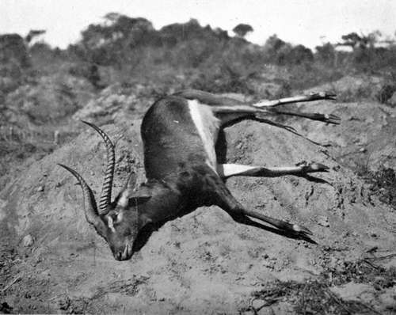

Various Subjects For The Sportsman And Naturalist. Part 5
Description
This section is from the book "Wild Life In Central Africa", by Denis D. Lyell. Also available from Amazon: Wild Life in Central Africa.
Various Subjects For The Sportsman And Naturalist. Part 5
There is no doubt Central Africa induces an irritability in white men, and often well educated and sensible men behave here in a way they would never think of doing at home. I have not noticed that liver complaint attacks white men here to the extent it does in India, but the climate has often a very deleterious effect on European brains, and this often turns an intelligent, humane-minded man into little better than a wild beast, causing him to treat natives brutally and unjustly.
The natives are often to blame, for they seem to have wonderful powers of aggravation and annoyance, not always from intent, but through pure stupidity and cussed-ness. Europeans who possess a highly sensitive nature, or who are naturally short or hot-tempered, suffer in this way more than those of an easy-going, patient nature, whose equanimity it is difficult to upset.
If a man suffers a great deal from malarial fever, or has suffered from it in another country before he came here, as I did, he should never bathe in the evening, particularly in cold water, as this is sure to induce a chill and bring out the fever. The best time to bathe is about midday, before having lunch. I suffered greatly from malarial fever before I had a bad attack of blackwater fever, but since then I have suffered little, and I think the blackwater fever carries most of the germs out of the system. I only give this opinion for what it is worth, as I am not a medical man, but such has been the case with myself, and I have also heard others mention it. When a man gets wet from being soaked by rain, or from perspiration after a hot walk in the sun, it is a foolish proceeding to sit in his wet clothes, particularly when the sun has gone down and the temperature is falling. I suppose nothing has caused more fever in the tropics than this, and it is a wise plan at all times to have a warm tweed jacket or a woollen sweater handy, to put on when the air gets chilly. In the tropics changes of the temperature take place very rapidly, and, as one is usually very lightly clothed in the heat of the day, there is all the more reason to be prepared for the cool of evening and night. Another frequent cause of a chill is lying on a bed half naked, and going to sleep like this. An hour or two before dawn the temperature falls several degrees, and the sleeper becomes chilled, and then pays for it with a sharp attack of fever.
The best thing is to be covered by wearing pyjamas, and have the blankets folded and ready to draw up, and this is done unconsciously, as it becomes a habit.
Fever is the most common complaint, and I do not intend to mention others, as I have little medical knowledge; but it will be a good thing for the newcomer if he notes what I have said. It is, of course, almost impossible to escape getting fever, especially in a country where mosquitoes are plentiful; but although a man has got the parasites in his blood, he can guard against bad fever. It is a good thing to make a practice of taking five grains of quinine two or three times a week, particularly in the rainy season, when the mosquitoes are most abundant.
Some people say that quinine does them harm, though the majority of Europeans will find that they do not have fever so often if they take it frequently. Warburg's Tincture suits some people better than quinine, though personally I think the latter is much the best drug for this complaint.
Europeans should live fairly well in the tropics and not stint themselves of a few luxuries at times, as nothing causes sickness more than unpalatable food.
Black Lechwe - Photo by J. E. Hughes.
VI.—Different Routes To Central Africa
Should a sportsman be coming to Nyasaland then he ought to book a passage to Chinde on the east coast, and as the large steamers cannot cross the Chinde bar on which there is not much water, all passengers and baggage have to be transferred to a tug which comes alongside the ocean steamer. There are two tugs kept at Chinde for this purpose, and they are named the Kadett and Adjutant;, and they both belong to the German East African Line. The Union-Castle Line run big steamers which touch at the Chinde buoy, and take passengers. Most Britishers will prefer to travel by a British line, although the steamers of the German line are usually quite comfortable.
When the passengers and their baggage have been put aboard the tug, she casts off and makes for Chinde, which is about ten miles from the buoy. The tug often bumps as she crosses the bar, but very seldom runs aground.
British Chinde consists of a fenced in concession, and all cargo for British possessions is landed free here, and pays duty for Nyasaland at Port Herald, the customs station. Many passengers and goods for North-Eastern Rhodesia come via Chinde, and I think it is the most interesting route into North-Eastern Rhodesia. As a river steamer is usually ready to proceed up the river for Port Herald, there is little delay, and passengers are often able to leave for up-country the day they arrive. Various companies have river steamers, such as the British Central Africa Company and the African Lakes Corporation Ltd.; and the river voyage is interesting to the lover of nature, although little large game will be seen.
Perhaps a few hippo may be noticed occasionally, although they are pretty wary. They dive before the steamer gets close, and appear again when it has passed. I think it is a great shame for passengers to fire at these animals, as they are seldom killed, though sometimes wounded. Besides, as a hippo sinks when shot dead, and takes a considerable time to rise, there is no chance of recovering the body, so it is senseless cruelty firing at them.
A few days from Chinde, the river steamer gets into the Shire River, where the scenery is more broken and prettier, and a fine view of the Morambala range is obtained. On reaching Port Herald, the traveller passes his belongings through the customs, and next day, as the steamers usually run in connection with the trains, he leaves for Blantyre, a distance by rail of 113 miles. Then, if he intends going for a shooting trip, there are several firms that will help him to get boys and carriers, and he can buy all kinds of foodstuffs there, though I advise him to bring his rifles, ammunition, tents, and camp outfit from home, as they will be cheaper. A comfortable deck chair and a mosquito net should never be forgotten.
Continue to:
- prev: Various Subjects For The Sportsman And Naturalist. Part 4
- Table of Contents
- next: Various Subjects For The Sportsman And Naturalist. Part 6